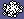
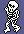

The town is full of things that come for the knight: monsters that appear round him every few turns, and now and then a creature out of nowhere. He fights them with antibodies, which he finds in the buildings, and each villain's monsters fall to one kind of antibody only. This page is how all of that works. The four villains themselves, and the objects that kill them, are the quest.
Where monsters come from
Every fourth turn, once the knight has appeared, SPAWN_MONSTER puts a monster in the first free one of the six monster records: in his cell or one of the eight round it, at a random place, as graphic 128, a monster appearing. It takes four turns to appear, 128 to 131, with a note that rises (APPEARING_UPDATE):
Then the random number's low byte makes it one of two sorts: below 128 a walker of graphics 112-127, otherwise a wanderer of 64-79. Both come in four kinds of four frames, and the kind is the kind of the villain nearest where it appeared (NEAREST_VILLAIN): run with a monster appearing beside each villain in turn, it returned 3, 2, 1, 0 for the villains in records 0 to 3. A monster three cells or more from the knight is simply forgotten, its record emptied, so they only ever gather round him. Left standing in an open cell for 600 turns, the knight saw 34 monsters appear, 11 becoming wanderers and 22 walkers: fewer than one every fourth turn, because a new one needs a free record, and not evenly split, since the random number is not evenly spread.

The wanderers, 64-79 (WANDERING_MONSTER): they drift about at random, up to 14 units a turn each way. Any antibody destroys one, for 500 points; touching the knight, one takes a hit off him, scores 500 all the same, and bursts.The walkers, 112-127 (MONSTER112_UPDATE): they walk straight, turning at walls and now and then, and one that appeared in the first half of a 256-turn cycle turns towards the knight when it turns (see how things move). Touching him, one takes a hit, scores 2500 and bursts.
Hits
The knight has three hits a life (HITS). A monster or the creature that touches him (TOUCHING_KNIGHT) takes one, and his colour shows what is left: white, then yellow, then green (see the drawing page). The last hit ends the life. A villain that touches him ends it at once, whatever he has left. Nothing can touch him while he is appearing at the start of a life. Touching is the same test everywhere (TOUCH_TEST): the two are closer along U than the first's half-size plus half the second's, and the same along V -- so it is not symmetrical, and the knight, as the second, reaches only half as far as his half-size says.
Antibodies, and what they do
Every sixteenth turn, if a find record is free, SPAWN_FIND puts a find in the knight's own cell -- if that cell is built on and its type still has finds in stock. So finds come only inside buildings. The kind of find is the low two bits of the building's type, which is also what picks its walls' colour: green, cyan, yellow or white. A find wanders about the room and is his if he touches it (FIND_WANDER); carried, it is an antibody, and the fire key throws the last thing he took up (KNIGHT_THROWS).


 The four finds, 48-63; carried and thrown, each is an antibody in flight:
The four finds, 48-63; carried and thrown, each is an antibody in flight: 
A find left behind when the knight leaves the room goes back into the stock. The stock is kept by cell type, not by building (STOCKS): every building of a type shares it. A new game gives each type from 2 up 16 to 31 finds, read from the ROM (STOCK_BUILDINGS); in the game this page started, 815 in all, 16 to 31 a type.
An antibody in flight does not look for anything. Each monster, in its own update, asks whether an antibody touches it (ANTIBODY_STRIKE). A wanderer is simply destroyed. What happens to a walker depends on the two kinds together: STRIKE_OUTCOME adds the monster's kind to the antibody's, and the sum's low two bits pick one of four routines (MONSTER_HIT_TABLE). Run in the simulator for every pair, stopping at whichever of the four it reached:
| Monster | Antibody 80-83 | 84-87 | 88-91 | 92-95 |
|---|---|---|---|---|
| 112-115 | destroyed | changed into the next kind | split in two | turned into one of 64-79 |
| 116-119 | changed into the next kind | split in two | turned into one of 64-79 | destroyed |
| 120-123 | split in two | turned into one of 64-79 | destroyed | changed into the next kind |
| 124-127 | turned into one of 64-79 | destroyed | changed into the next kind | split in two |
Destroyed scores 2500 (HIT_DESTROYS); changed into the next kind, one that needs another antibody, 2000 (HIT_CHANGES); split in two, 1500 (HIT_SPLITS); turned into a wanderer, which any antibody will then destroy, 1000 (HIT_DEMOTES). The split does not do what it was meant to: its search for a free record looks at the wrong records, and the copy lands on the first monster record whatever is in it.
So each villain's walkers fall to one kind of antibody only, and the kind comes from the colour of the building it was found in. Put together from the runs above and the code that makes finds and antibodies:
| Villain | Its monsters | Destroyed by | Found as | In buildings coloured | On the panel |
|---|---|---|---|---|---|
 108 | 124 and 76 | 84 | cyan (types 5, 9, 13, 17, 21, 25, 29, 33) | green | |
| 104 | 120 and 72 | 56 | yellow (types 6, 10, 14, 18, 22, 30, 34) | cyan | |
| 100 | 116 and 68 | 92 | white (types 3, 7, 15, 19, 23, 27, 31, 35) | yellow | |
| 96 | 112 and 64 | 80 | green (types 4, 8, 12, 16, 20, 24, 28, 32) | magenta |
One more slip: ANTIBODY_STRIKE means to try both antibody records, but loads the step to the second into a register and never adds it, so it tries the first twice. Run with a monster and an antibody on the same spot: with the antibody in the first record, struck; in the second, not struck. An antibody thrown while another is still in flight passes through every monster it meets.
The creature
Once every 256 turns, when the turn counter's low byte comes round to 0, SPAWN_CREATURE turns the first monster record that is not near the knight into the creature, graphics 136-139, and puts it in his own cell. It makes straight for him, two units a turn along each axis (CREATURE_UPDATE), blipping as it comes. Touching him it takes a hit; an antibody (the first record's) bursts it for 1000; and a wall bursts it too, for the same 1000 -- the reward for leading it into one. Watched with the knight standing still for 600 turns, it came 2 times, each time with the counter's low byte at 0.
The bonus
A bonus is nearly always about. Whenever the bonus record is empty, PLACE_BONUS tries to put one in a cell in the knight's own column or the fourth to its right, and from four rows above his to three below, as long as the cell is not solid and not beside him: graphic 2, a faster walk for 255 turns (SPEED_BONUS), on an even turn, and graphic 3, all three hits back (HITS_BONUS), on an odd one. But a bonus lies only while the knight is within three cells of it in both directions, so one placed four columns over, or four rows away, is gone again at its first update, and the next turn tries again. With the knight standing in cell (16,16) and the bonus record emptied at the start of each of 300 turns, 235 bonuses were placed (120 of graphic 2, 115 of graphic 3; the other 65 turns chose a solid cell or one beside him), and 71 were still there a turn later: all of them in his own column, two or three rows away.
| Columns over | Rows over | Placed | Still there a turn later |
|---|---|---|---|
| +0 | -4 | 10 | 0 |
| +0 | -3 | 11 | 11 |
| +0 | -2 | 52 | 52 |
| +0 | +3 | 8 | 8 |
| +4 | -4 | 10 | 0 |
| +4 | -3 | 10 | 0 |
| +4 | -2 | 51 | 0 |
| +4 | -1 | 9 | 0 |
| +4 | +0 | 10 | 0 |
| +4 | +1 | 11 | 0 |
| +4 | +2 | 41 | 0 |
| +4 | +3 | 12 | 0 |
The rows are far from even. The row comes from the random number's high byte, which is the least random part of it: the turn counter's high byte added once a stir, the same for 256 turns at a time.
Confirmed and inferred
- Run in the simulator when this page was built: the strike outcomes for all sixteen pairs; the nearest villain's kind for each villain; the antibody test with each antibody record; the finds' stock at a new game; the bonus's placements; the monsters and the creature round a knight left standing.
- Read from the code: the spawning rates, the hits, the scores, the chain from a building's colour to a find's kind to an antibody's (the build checks the bytes that make it).
- Inferred: that the one-kind-per-villain scheme was meant as the game's puzzle -- a player has to learn which buildings' antibodies work where -- and that the split and the second antibody record are slips.